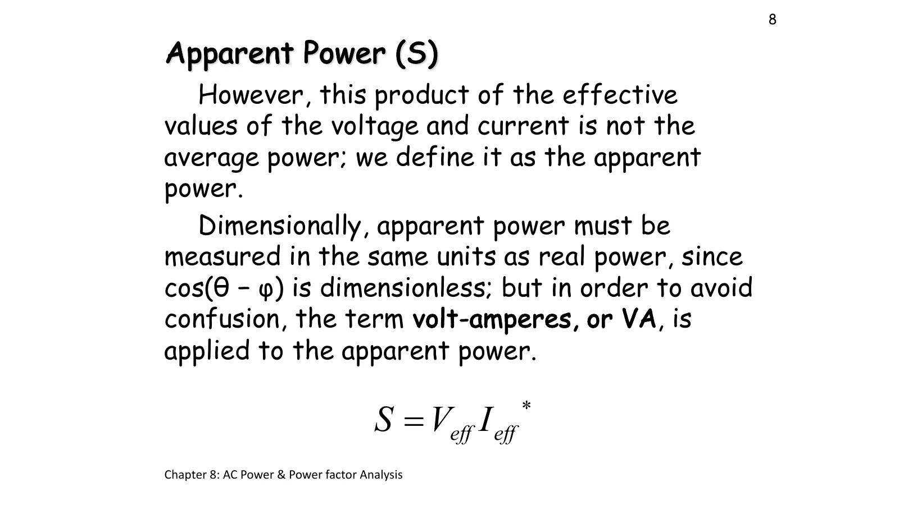
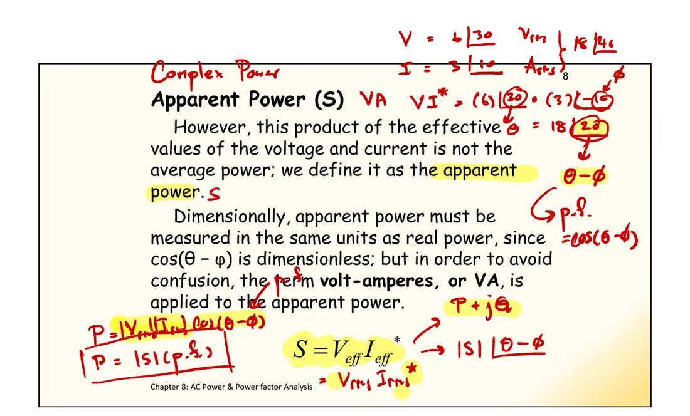
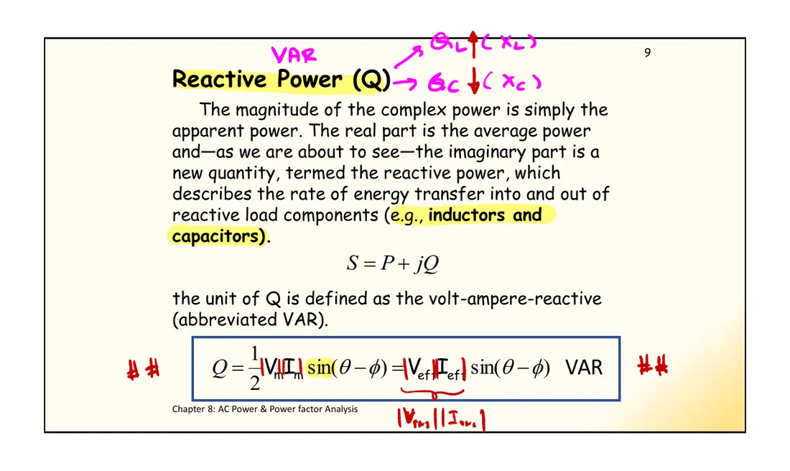
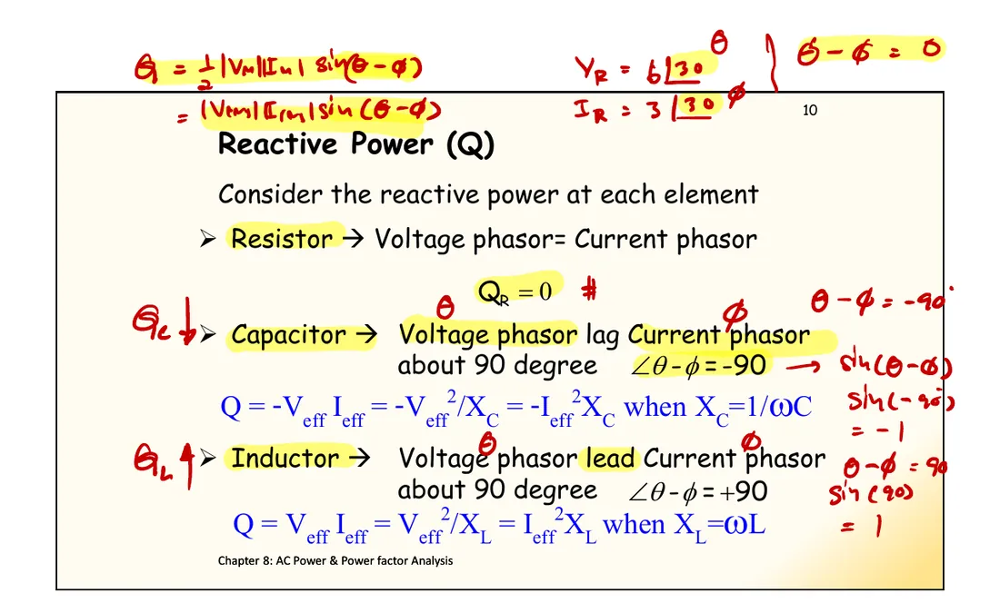

The product \(V_{\text{eff}}I_{\text{eff}}\) "looks like" DC power, but it is not the average power. Slide p. 8 therefore calls it the apparent power and gives it the unit volt-ampere (VA) to avoid confusion with watts. What is missing from the average power is the reactive power \(Q\), in volt-ampere reactive (VAR), which says how much energy flows back and forth between the source and the inductors and capacitors. Slide p. 9 combines both into the complex power \(\mathbf{S} = P + jQ\): its magnitude is the apparent power and its angle is the phase difference \(\theta-\phi\). This page has a simulation that splits the current into the part that does work and the part that flows back and forth (section A), why the conjugate is needed (section B), and the slide p. 7 problem continued as in class (problem 1).
Apparent power \(|\mathbf{S}| = V_{\text{eff}}I_{\text{eff}}\), in VA, sizes wires, transformers and generators, because it depends on the whole current that flows.
Reactive power \(Q = V_{\text{eff}}I_{\text{eff}}\sin(\theta-\phi)\), in VAR, is the size of the energy flowing back and forth, which averages zero · \(Q_R = 0\), \(Q_L = I_{\text{eff}}^2X_L = V_{\text{eff}}^2/X_L > 0\) and \(Q_C = -I_{\text{eff}}^2X_C = -V_{\text{eff}}^2/X_C < 0\) (slide p. 10).
Split the current into a part in phase with the voltage, \(I_{\text{eff}}\cos(\theta-\phi)\), and a part at 90°, \(I_{\text{eff}}\sin(\theta-\phi)\): \(P\) = voltage × in-phase part and \(Q\) = voltage × 90° part (Hayt Fig. 11.16).
Complex power \(\mathbf{S} = \mathbf{V}_{\text{eff}}\mathbf{I}^*_{\text{eff}} = P + jQ\): the conjugate of the current makes the angle \(\theta - \phi\) · with peak phasors, \(\mathbf{S} = \tfrac12\mathbf{V}\mathbf{I}^*\).
Complex power is conserved: the total \(\mathbf{S}\) sent out by the sources equals the total \(\mathbf{S}\) taken by all the elements, for \(P\) and \(Q\) separately.

สไลด์หน้า 8 · แตะรูปเพื่อขยายSlide p. 8 · tap to enlargeดูสไลด์หน้า 8 ที่ผู้สอนเขียนในห้อง (สไลด์ปี 2561)See slide p. 8 as written in class (2018 slides)

ตัวอย่างในห้อง: \(\mathbf{V} = 6\angle 30^\circ\) V rms, \(\mathbf{I} = 3\angle 10^\circ\) A rms ได้ \(\mathbf{V}\mathbf{I}^* = 18\angle 20^\circ\) VA และ \(P = |\mathbf{S}|\cdot\text{PF}\)The class example: \(\mathbf{V} = 6\angle 30^\circ\) V rms, \(\mathbf{I} = 3\angle 10^\circ\) A rms gives \(\mathbf{V}\mathbf{I}^* = 18\angle 20^\circ\) VA, and \(P = |\mathbf{S}|\cdot\text{PF}\)
A 100 V (effective) source drives a resistor in parallel with an inductor or a capacitor, so the common voltage is the reference. The resistor current \(\mathbf{I}_R\) is in phase with the voltage, the reactive branch current \(\mathbf{I}_X\) is at 90°, and \(\mathbf{I} = \mathbf{I}_R + \mathbf{I}_X\): exactly Hayt Fig. 11.16. The graph splits \(p(t)\) in two: \(p_R = v\,i_R\) never goes negative and averages \(P\), while \(p_X = v\,i_X\) swings about zero with amplitude exactly \(|Q|\). This is what reactive power means: energy lent out and returned every half cycle. The defaults give a 3-4-5 triangle: \(P = 400\) W, \(Q = 300\) VAR, \(|\mathbf{S}| = 500\) VA.
ดูสไลด์หน้า 9–10 ที่ผู้สอนเขียนในห้อง (สไลด์ปี 2561)See slides pp. 9–10 as written in class (2018 slides)

\(Q_L\) เป็นบวก (\(X_L\)) และ \(Q_C\) เป็นลบ (\(X_C\))\(Q_L\) is positive (\(X_L\)) and \(Q_C\) negative (\(X_C\))

\(\sin(\theta-\phi)\) เป็น 0, −1 และ +1 สำหรับ R, C และ L\(\sin(\theta-\phi)\) is 0, −1 and +1 for R, C and L
Multiplying \(\mathbf{V}\mathbf{I}\) directly gives the angle \(\theta + \phi\), which changes as soon as we move the instant we start counting time (moving the time origin turns both phasors by the same angle). But power cannot depend on when we start the clock. Multiplying by the conjugate \(\mathbf{I}^* = I\angle{-\phi}\) gives the angle \(\theta - \phi\), which does not change when both turn; its real part is \(P\) and its imaginary part is \(Q\). Press "turn the time origin" and watch the grey arrow \(\mathbf{V}\mathbf{I}\) turn while \(\mathbf{S} = \mathbf{V}\mathbf{I}^*\) stays still. Class examples: \(\mathbf{I} = 3 + j4 \Rightarrow \mathbf{I}^* = 3 - j4\) and \(\mathbf{I} = 5\angle 30^\circ \Rightarrow \mathbf{I}^* = 5\angle{-30^\circ}\).
The same circuit as page 8.1, problem 1 (peak phasors 20∠0° V and 10∠0° V). In class we went on from the average powers to \(Q\) of the inductor and the capacitor and the complex power the 20 V source sends. The side picture draws the complex power of each element as the steps find it; the last step joins them head to tail, and the chain ends exactly at the tip of the \(\mathbf{S}\) sent by the 20 V source (complex power is conserved). The graph shows \(p_C\) and \(p_L\) swinging with amplitude exactly \(|Q|\). The class notes for this problem are the right-hand column of the page shown with page 8.1, problem 1.
In section A press "L only": \(P = 0\), yet 3 A still flows in the line and \(|\mathbf{S}| = 300\) VA.
The source must deliver this current although none of it ends up as work, so the wires heat up for nothing (this is where page 8.4 starts).
Press "R ∥ C": \(Q\) is negative, the arrow \(\mathbf{I}_X\) points up, and the total current leads the voltage.
Try this 2 — the conjugate
In section B press "turn the time origin": \(\mathbf{V}\) and \(\mathbf{I}\) turn together, the grey arrow \(\mathbf{V}\mathbf{I}\) turns twice as fast, but \(\mathbf{S}\) stays still.
Set \(\phi = \theta\): \(\mathbf{S}\) lies on the real axis, \(Q = 0\) (a resistive load).
Set \(\phi = \theta - 90^\circ\): \(\mathbf{S}\) points straight up, \(P = 0\) (a pure inductor).
Try this 3 — the complex power balance
Problem 1: \(25 + j125 - j50 + (25 + j25) = 50 + j100\) VA, equal to what the 20 V source sends out.
Hover over an element in the circuit of problem 1 to see its \(P\) and \(Q\) (peak phasors).
The class wrote \(Q_L = 124\) VAR by rounding \(\tfrac12(22.36)(11.18) = 124.99\) down; the correct value is 125 VAR.
Chapter 8 slides, pp. 7–10 · 2018 slides · Hayt §11.4–11.5 (Fig. 11.16, Table 11.1, Practice 11.9)